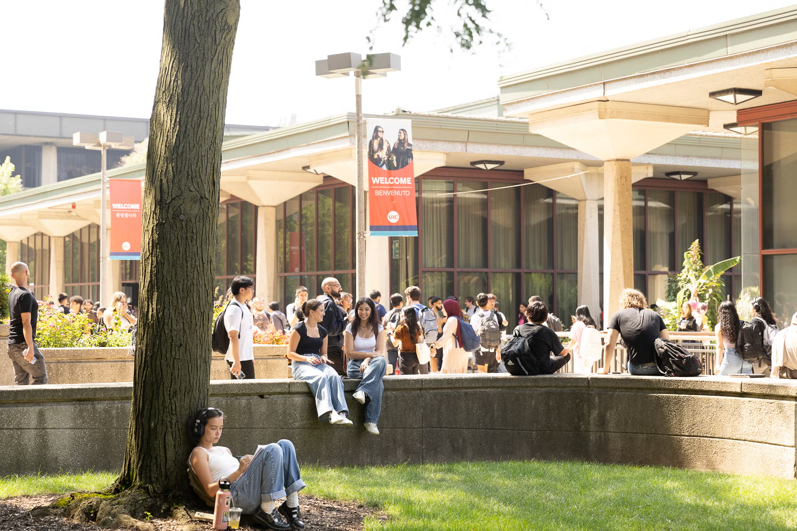

Career access
Recruiters, alumni, site visits, and the internships that come out of them.
 Business Analytics
Business AnalyticsLearn · Connect · Grow
Build real skills, meet people who get it, and find out where analytics can take you.

Why BAO
Workshops, real conversations with professionals, and a group that's easy to walk into.
What BAO does
Recruiters, alumni, site visits, and the internships that come out of them.
Workshops, case competitions, and projects where you actually build something.
Resumes, interviews, and getting comfortable talking about your work.
Join the community
Fill out the membership form and we'll get you plugged in with BAO.